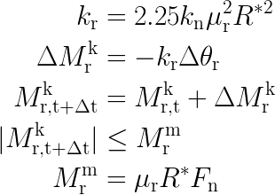
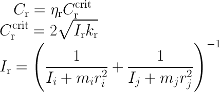

gran rolling_friction epsd model¶
Syntax¶
rolling_friction epsd [other model_type/model_name pairs as described here ] keyword values
- zero or more keyword/value pairs may be appended to the end (after all models are specified)
torsionTorque values = 'on' or 'off' on = also the normal, relative rotation (torsion) contributes to the resulting torque off = only the tangential, relative rotation contributes to the resulting torque
Description¶
This model can be used as part of pair gran and fix wall/gran
The elastic-plastic spring-dashpot (EPSD) model (see Ai et al.) adds an additional torque contribution, equal to

where the torque due to the spring M_rk is calculated as
Here k_r denotes the rolling stiffness that depends on the stiffness of the normal spring (from the normal contact law), the effective radius and the coefficient of rolling friction (mu_r). Following (Ai) the prefactor of 2.25 is valid for 3D simulations. The EPSD3 model allows to modify the prefactor. dtheta_r is the incremental relative rotation between the particles. The spring torque is limited by the full mobilisation torque M_rm that is determined by the normal force F_n and the coefficient of rolling friction (mu_r) (compare the CDT model).
The viscous damping torque M_rd is implemented as

where in the current implementation the damping is disabled in case of full mobilisation (f = 0). The damping coefficient C_r may be expressed as:
Here I_i/j is the moment of inertia and m_i/j is the mass of the particles i and j, respectively.
The coefficient of rolling friction (mu_r) must be defined as
fix id all property/global coefficientRollingFriction peratomtypepair n_atomtypes value_11 value_12 .. value_21 value_22 .. .
(value_ij=value for the coefficient of rolling friction between atom type i and j; n_atomtypes is the number of atom types you want to use in your simulation)
This coefficient mu_r is equal to the mu_r as defined in the CDT model. In addition to mu_r, eta_r is the required material property that must be defined as
fix id all property/global coefficientRollingViscousDamping peratomtypepair n_atomtypes value_11 value_12 .. value_21 value_22 .. .
(value_ij=value for the coefficient of rolling friction between atom type i and j; n_atomtypes is the number of atom types you want to use in your simulation)
Warning
You have to use atom styles beginning from 1, e.g. 1,2,3,...
Torque information:
By default the relative, normal rotation (torsion) is subtracted and does not contribute to the resulting torque. By setting the torsionTorque keyword to ‘on’, the full relative rotation contributes to the rolling friciton torque.
Coarse-graining information:
Using coarsegraining in
combination with this command might lead to
different dynamics or system state and thus to
inconsistencies.
Note
Coarsegraining may or
may not be available in LIGGGHTS(R)-PUBLIC.
Default¶
torsionTorque = ‘off’
(Ai) Jun Ai, Jian-Fei Chen, J. Michael Rotter, Jin Y. Ooi, Powder Technology, 206 (3), p 269-282 (2011).